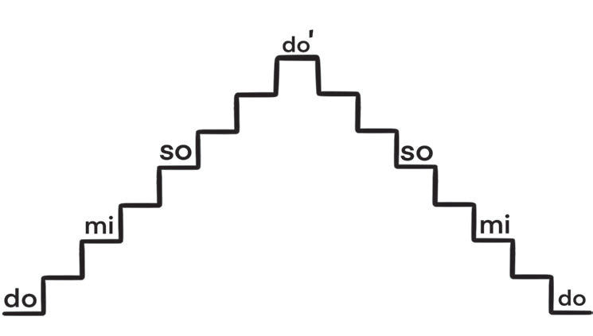
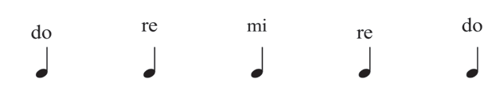
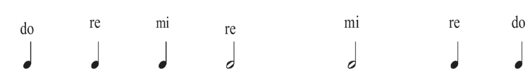
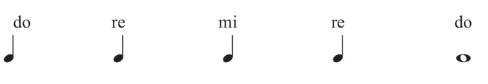

(b)

Kazi ya kufanya namba 5
Kwa kuzingatia idadi ya mapigo katika jedwali namba moja, imba silabi za solfa zifuatazo:
(a)

(b)

(c)


Kwa kuzingatia idadi ya mapigo katika jedwali namba moja, imba silabi za solfa zifuatazo:


